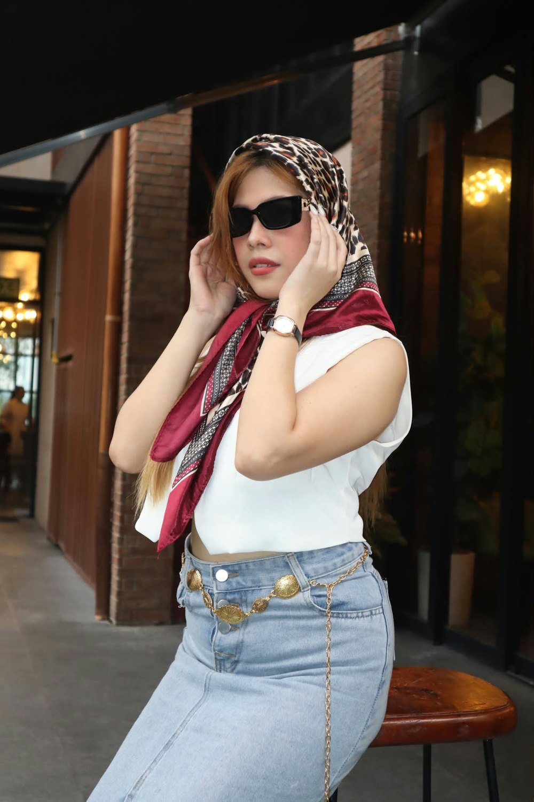
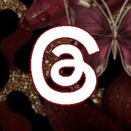

Independent creative strategist · Tarlac · Working remotely
Strategy people understand.
Creative they can feel.
I turn what makes your business worth choosing into content built to move.
For founders and growing brands who are done with random posting—but still want their marketing to sound unmistakably human.
3 years turning positioning into content · 50+ brands guided
The work behind the work
Positioning → Story → Action
Every asset has a job. Every message earns its place.
Build the angle
Not content for
content's sake.

Kim · Creative strategistThe person behind the strategy
I make the message make sense.
I'm Kim, a creative and social media strategist who turns business insight into content people understand, feel, and act on. I work across positioning, creative direction, and conversion copy—building systems with clarity before noise.
Strategic enough to build the framework. Creative enough to break it.
01 Ways to work together
Not more noise.
A sharper reason to care.
I build the thinking, language, and creative direction that give your content somewhere meaningful to go.
01 · Clarity before output
Brand-to-Content Strategy
For brands that have outgrown 'just post consistently.' We find the message, audience tension, content roles, and campaign direction before deciding what to make.
- Positioning & audience research
- Content pillars with conversion intent
- Creative testing map
- 90-day strategic direction
02 · A system with a pulse
Creative Content Direction
A repeatable creative system that keeps the brand recognizable without making every post feel the same—from strong hooks to visual routes and short-form concepts.
- Campaign & series concepts
- Reels, carousel & static direction
- Hooks, scripts & captions
- Monthly content architecture
03 · Make the next step obvious
Conversion Copy & Paid Social
Clear, specific language for moments where attention needs to become action—without stripping the voice or overselling the outcome.
- Landing page & funnel copy
- Meta and TikTok ad concepts
- Email & SMS sequences
- Testing and message iteration
02 Selected concept work
The design catches the eye.
The thinking holds it.
Five self-initiated case studies built to show the strategic decisions behind the surface. No borrowed metrics. No pretend client results.
Concept study · Leadership brand · Positioning
Lumen House
Positioned Maya Reyes as the calm, clear alternative to performative leadership—then translated that point of view into a recognizable content and offer system.
Founder positioningEditorial systemOffer journey
See the thinking ↗
Concept study · Cleaning service · Trust funnel
Freshspace
Turned "we clean spaces" into a clearer promise: cleaner environments that help people live and work better—supported by proof, education, and direct-response content.
Message hierarchyTrust contentLead generation
See the thinking ↗
Concept study · Dental clinic · Patient journey
BrightSmile
Built a patient-friendly content mix that moves from reassurance and useful education to treatment proof and low-friction appointment prompts.
Patient educationProof contentBooking CTA
See the thinking ↗
Curated feed study · Sports lifestyle · Social concepts
Courtside Social
A six-post feed study exploring how racquet-sport content can balance product desire, beginner energy, community, lifestyle, consistency, and pattern-interrupt creative.
Content varietyCommunity energyVisual system
See the thinking ↗
Paid creative studies · Consumer products · Paid creative
Product Creative Lab
Two attention-first ad routes that make the product impossible to miss: one built on a familiar emergency-device visual, the other on exaggerated scale and movement.
Pattern interruptProduct framingPaid social
See the thinking ↗
03 From idea to useful system
Clear thinking.
Then the good stuff.
A collaborative process designed to get us out of vague territory quickly—and into work your audience can recognize themselves in.
Listen closely
Business context, customer language, existing signals, and the real friction under the brief.
Find the angle
Positioning, message hierarchy, content roles, and a strategic idea strong enough to hold the work.
Build the system
Concepts, copy, creative direction, and an operating rhythm your brand can keep using.
Learn & sharpen
Review the signal, refine the creative, and make the next decision with better information.
Four ways to start
Not one price. Four ways in.
Pick the entry point that matches where you are—from a second opinion to an ongoing strategic partner.
01 See it clearly→
02 Position it intentionally→
03 Build the foundation→
04 Keep it moving
Social Presence Audit
A second set of eyes on your social presence.
- Profile positioning
- Content direction
- Visual consistency
- Messaging & audience connection
A concise audit with prioritized recommendations.
Let's talk ↗Positioning + Creative Direction
Make the brand feel like the business it's becoming.
- Positioning & message clarity
- Brand voice direction
- Content pillars & creative territories
- Visual/content direction
Not a rebrand—helping an already-built business become more intentional and recognizable in how it shows up.
Let's talk ↗30-Day Strategic Content Plan
A month of content with a reason behind it.
- 30-day content map with weekly themes
- Campaign & offer angles
- Reel concepts, hooks & CTA direction
- Repurposing opportunities
You're not buying 30 posts. You're buying 30 days of strategic direction.
Let's talk ↗90-Day Content & Social Support System
Keep the strategy moving.
- Monthly strategic planning & content direction
- Campaign coordination & creative review
- Messaging refinement & performance observations
- Coordination with your designer, VA, or team
The strategic brain coordinating your content ecosystem—not necessarily the one making every post.
Let's talk ↗Most people start at 01 or 02.
Kim Creative / Platform strategy · Seven ways to win
Same message.
Seven different games.
Every platform rewards a different behavior. Here's how the strategy changes to win on each one.

Threads
The way in: Hook the pain, not the product.
- Open with a line that names a specific pain tied to the offer, not the offer itself
- Keep the caption link-free so reach isn't suppressed
- Drop the link in the first comment once people are already engaged and replying
- Reply to real replies — Threads rewards back-and-forth, not broadcast
The way in: Belong before you sell.
- Native video and carousels outperform outbound links in the feed
- Post inside relevant groups first, page second
- Let a pinned comment carry the offer or link, not the caption
- Lean on trust signals — reviews, before/afters, real names
The way in: Lead with expertise, not personality.
- First two lines are the whole hook — everything after "see more" only gets read if those earn the click
- Native documents and carousel PDFs keep people dwelling inside the post
- Comments in the first 60 minutes matter more than likes — end on a real question
- Keep the link out of the post itself, drop it in the first comment
The way in: Win the first three seconds, then win the save.
- Reels get discovered, carousels get saved — build for both
- Hook in the first frame, payoff by the third
- Caption carries the story, "link in bio" carries the action
- Stories carry urgency and behind-the-scenes
YouTube
The way in: The thumbnail sells the click, the first 15 seconds sell the watch.
- Title and thumbnail are the whole pitch before anyone sees a frame
- Structure for retention, not just information
- Shorts feed discovery, long-form builds the relationship
- The one platform where the link in the description can just be a link
TikTok
The way in: Earn the algorithm, not the following.
- An interest graph, not a follower graph — zero followers can still reach thousands
- Hook inside the first 1–2 seconds or the scroll wins
- Native sounds and trends aren't optional, they're distribution
- Reply to comments with a video, not just a line
The way in: Build for search, not for the scroll.
- Behaves like a search engine — keyword-rich pins surface for months, not hours
- Idea Pins for discovery, static Pins for evergreen search traffic
- The one platform where a direct clickable link on the pin is expected
- Design for saves — a pin's job is to be revisited
All seven tiles use the same burgundy lily and gold leopard treatment — swap any of them for a different crop whenever you want.
Kim Creative / Reporting · Sample dashboard
Read the signal.
Make the next move.
A sample of how I organize performance, interpret the content, and turn the numbers into a practical next test.
Illustrative data · Not client results
Reach24,800Unique accounts · demo
Engagements1,240Interactions · demo
Link clicks310Outbound clicks · demo
Inquiries18Reported inquiries · demo
Are people choosing to save?
Weekly saves, shown as counts across a four-week demo period.
Total saves: 260. Saves show interest in returning to content; they do not establish sales impact.
From observation to action
- ObservationEducational content has the highest save rate in this sample: 130 saves ÷ 8,000 reached = 1.63%.
- Working hypothesisPractical explanations may be useful enough to revisit. The dataset alone cannot explain why.
- Next testPublish two educational Reels on the same topic, vary the opening hook, and compare saves per account reached over the same seven-day window.
Content mix / Demo performance
| Content role | Posts | Reach* | Saves | Save rate |
|---|---|---|---|---|
| Awareness | 4 | 12,000 | 90 | 0.75% |
| Education | 4 | 8,000 | 130 | 1.63% |
| Offer | 2 | 6,000 | 40 | 0.67% |
All values are fictional and provided to demonstrate reporting structure. Save rate = saves ÷ reach × 100, rounded to two decimals. *Reach can overlap across content roles and should not be summed as unique accounts. Weekly and content-role saves both total 260. Replace this dataset with verified results and a defined reporting period before using it as client proof.
Open for select projects
Your business already has something worth saying.
Let's make it easier for the right people to notice, understand, and choose it.
Typically responds within 24 hours.